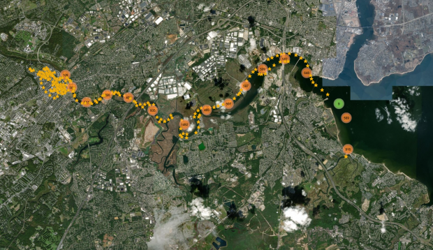

news about my research
Creating a rich digital environment to support resilience on the Lower Raritan

Damage Assessment After Hurricane Harvey
High tech tools being used to check Yerba Buena Tunnel
Mobile Hybrid LiDAR and Infrared Sensing for Natural Gas Pipeline Monitoring
Bentley Institute and Rutgers University Collaborate on Hurricane Sandy Research
NJ Transit, Rutgers study UV light to rid buses of coronavirus